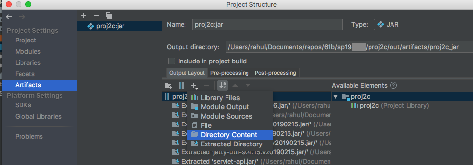

Deploying on Heroku
Creation of a JAR with dependencies
A JAR with dependencies is a type of JAR that includes all your code from the external libraries (dependencies) used in the project. When we deploy an application on external server we need this kind of JAR which is self-sufficient(does not depend on anything else) and is enough to run the entire code.
An important step for this is to package all the resources, i.e, static data files (images, etc in our case) within this JAR itself.
1. Configuring JAR
- Go to
File->Project Structure->Artifacts->+->JAR->from modules with dependencies - Your current module will be selected
- In the
Main Classfield click on the folder icon on the right end and selectMapServer.java - Next select the option
extract to the target JAR
- The field
Directory for META-INF/MANIFEST.MFwould be populated. Ensure that the path given here is only upto the base(proj2c) directly. - In the
Output Layouttab, click+, selectDirectory Contentand select thelibrary-fa20directory. This will place the contents oflibrary-fa20into the jar

- Select
ApplyandOk.
2. Configuring your code
2.1 Editing Paths
Since we have placed the data directory in the jar itself, we need to change the file paths of our images and other xml files.
- Replace all occurences of paths starting with
../library-fa20/datatodata/. You might find theReplace in Pathoption helpful to do this.(Edit->Find->Replace in Path).
2.2 Reading files
Since the files are present in the JAR now, we need to change the way we read them in RasterAPIHandler and StreetMapGraph. To read files from jar we make use of Thread.currentThread().getContextClassLoader().getResource(filePath) and Thread.currentThread().getContextClassLoader().getResource(filePath) functions. These functions help us access content from our resources root.
- This is how the code for reading an image in
RasterAPIHandlershould look like
- This is how the code for reading an image in
StreetMapGraphshould look like
2.2 Configuring port
Since we are deploying our application on an external server we need to configure the port we want our application to run on.
- Add the following function to
MapServerInitializer. This function returns the appropriate port to be used by the application. It sets the default to 4567.private static int getHerokuAssignedPort() { ProcessBuilder processBuilder = new ProcessBuilder(); if (processBuilder.environment().get("PORT") != null) { return Integer.parseInt(processBuilder.environment().get("PORT")); } return 4567; //return default port if heroku-port isn't set (i.e. on localhost) } - Call the above method in first line of the
initializeServerfunction usingport(getHerokuAssignedPort()); - This is how it looks like
Building JAR
- Go to
Build->Build Artifacts... - After this you will be able to see the JAR file created in your base project directory(proj2c) under the path
out/artifacts/<base-project-directory-name>_jar/<base-project-directory-name>.jar. This is JAR with dependencies.
Testing your JAR
On the terminal, navigate to the path where the JAR was created and run java -jar <jar-name>.jar. Your application should start running and work as it worked when you ran it from IntelliJ. Now we are ready to deploy this on Heroku
Heroku Deployment
Onetime setup steps
Please do not execute these everytime you want to deploy
- Setup your free Heroku account here https://signup.heroku.com/dc
- Install and setup Heroku Command Line Interface (CLI) at https://devcenter.heroku.com/articles/getting-started-with-java#set-up
- Make sure you have completed log-in steps to Heroku cli using the command
heroku login - Run command
heroku create bearmaps-<repo-id(For example, bearmaps-fa20-s9999) in the base project directory(proj2c). This will create a Heroku app with the namebearmaps-<repo-id>and would be visible in your Dashboard at https://dashboard.heroku.com/apps
- Install Heroku deploy plugin using
heroku plugins:install heroku-cli-deploy
Deploying
- Deploy your JAR using the following Command
heroku deploy:jar <path-to-JAR-file>.jar --app bearmaps-<repo-id> --jdk 11
- Your App will be deployed at http://bearmaps-
.herokuapp.com/map.html . **Please make sure to use only http and not https** - You can go to Heroku dashboard and explore different features. Click on
Moreto see logs of your app.
For more information use the following link:
FAQ
Unable to read image and/or xml files.
Make sure that the paths are changed correctly and you have included the contents of library-fa20 folder in the jar output, while configuring artifact.
The changes in code are not reflected on Heroku.
Make sure you rebuild the artifact(jar) and redeploy it.